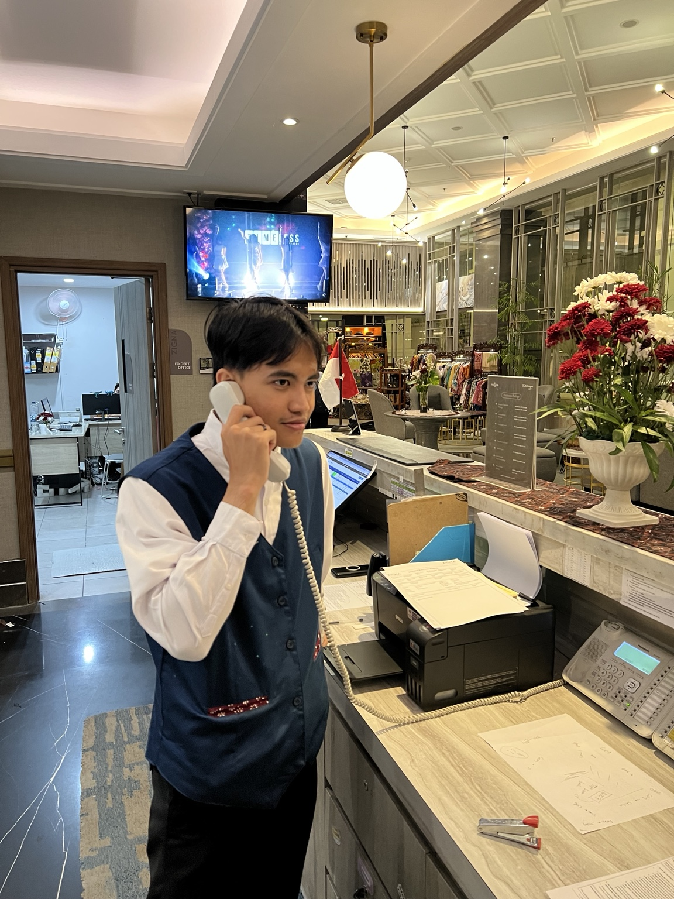
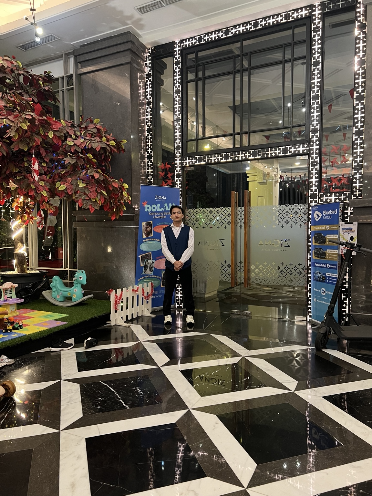
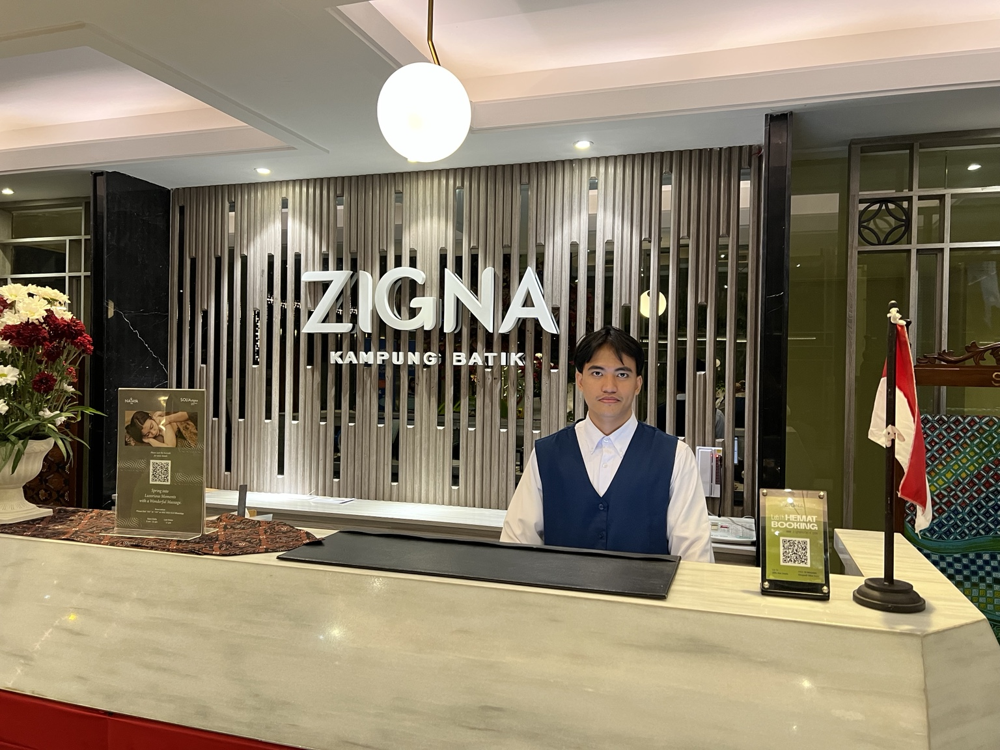

VERKAUF
Kundenkontakt.
Bedürfnisse verstehen.

Mein Weg hat mich vom Kundenkontakt im Verkauf an den Front Office geführt — näher an Menschen, näher am Service, näher an dem Moment, in dem ein Gast seinen ersten Eindruck bekommt.
Ich lerne nicht nur Abläufe. Ich lerne, wie Aufmerksamkeit, klare Kommunikation und zuverlässiges Handeln einen Aufenthalt besser machen.
Kundenkontakt.
Bedürfnisse verstehen.
Begrüßen.
Informieren. Organisieren.
Service nicht nur beantworten —
den nächsten Bedarf erkennen.
Ausbildung zum
Hotelfachmann in Deutschland.
IST NICHT NUR EINE ANTWORT.
Die Arbeit soll sichtbar sein. Deshalb stehen echte Situationen, echte Räume und echte Bewegungen im Mittelpunkt dieses Portfolios.


Telefon, Informationen, Fragen, Orientierung. Front Office bedeutet für mich: aufmerksam bleiben und klar handeln.
Ein Gast kommt an. Der erste Eindruck beginnt, bevor die erste Frage gestellt wird.
Telefonisch und persönlich kommunizieren. Zuhören, verstehen, klar antworten.
Gäste unterstützen — freundlich, lösungsorientiert und mit Blick auf den nächsten Bedarf.
Informationen aufnehmen, weitergeben und Abläufe zuverlässig begleiten.
Auch die kleinen Aufgaben zählen. Genauigkeit ist Teil von gutem Service.
Sechs kurze Beobachtungen aus dem Praktikum. Keine Inszenierung — nur Bewegung, Haltung und die kleinen Abläufe hinter gutem Service.
Kompetenz entsteht dort, wo man Verantwortung übernimmt und aus echten Situationen lernt.
Gästebedürfnisse verstehen, statt nur Standardantworten zu geben.
Neue Abläufe, Hotelstandards und Informationen schnell aufnehmen.
Präzise arbeiten und Verantwortung für den eigenen Teil des Ablaufs übernehmen.
Freundlich, klar und lösungsorientiert kommunizieren — persönlich und am Telefon.
Laweyan · Surakarta
Front Office Praktikum
SYSTEMS
PEOPLE
Der technische Hintergrund hilft mir, Systeme schnell zu verstehen. Im Front Office habe ich entdeckt, dass ich gleichzeitig näher an Menschen arbeiten möchte.Eine fremde Umgebung. Eine Frage. Ein erster Kontakt. Ich möchte lernen, wie ich durch klare Informationen, Aufmerksamkeit und zuverlässige Abläufe dazu beitragen kann, dass sich ein Gast sicher und willkommen fühlt.
READY FOR THE NEXT STEP?
Sie möchten mehr über meinen Weg, meine Praxiserfahrung oder eine mögliche Zusammenarbeit erfahren? Schreiben Sie mir direkt.